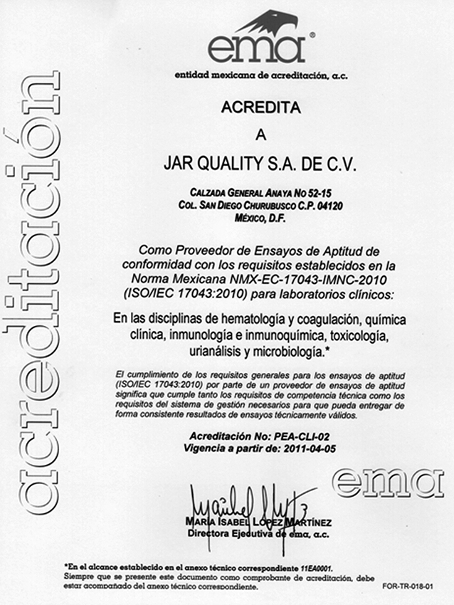

Jar Quality, S.A. de C.V.
General Anaya Núm. 52, casa 15
Col. San Diego Churubusco
Del. Coyoacán
C.P. 04120 México D.F.
(55) 5336-2499, 5336-0698 y 5336-0730
servicio@qualitat.cc
www.qualitat.cc
Empresa acreditada por la Entidad Mexicana de Acreditación A.C., por el cumplimiento de los requisitos de la norma mexicana NMX-EC-17043-IMNC-2010 (ISO/IEC 17043:2010). Como proveedor de ensayos de aptitud para los laboratorios clínicos, los cuales fueron desarrollados por el Comité Internacional para la Acreditación de Laboratorios para “Garantizar La Calidad de los Programas de Control de Calidad”, incluyendo planeación, organización, desarrollo y control de la estructura, procesos y resultados. Damos capacitación, asesoría y asistencia técnica a los usuarios para lograr y documentar la mejora continua de la calidad, y así logren brindar a sus pacientes el máximo beneficio, con el menor riesgo y el mejor costo.
POLÍTICA DE CALIDAD
Es compromiso de todos los colaboradores de Qualitat satisfacer las legítimas expectativas de nuestros clientes, socios, proveedores y accionistas, a través de un Sistema de Gestión de Calidad que incluye todos los procesos y servicios establecidos para garantizar la mejora continua de la confiabilidad y oportunidad de los resultados.
MISIÓN
Brindar servicios integrales de Planeación, Organización, Desarrollo y Control de Calidad incluyendo Programas de Capacitación Asesoría y Asistencia Técnica, Programas Internos de Control (PICC) y Esquemas de Evaluación Externa (EEE), utilizando tecnología de vanguardia de alta eficacia y eficiencia, capaces de mejorar la oportunidad y la toma de decisiones, para que de esta manera se garantice que nuestros clientes reporten a sus usuarios resultados más defendibles y menos cuestionables que minimicen riesgos y costos en beneficio de sus pacientes.
VISIÓN
Lograr un mejor diagnóstico en todos los exámenes y en cada una de las pruebas que realicen los laboratorios clínicos:
• Para que los pacientes puedan acudir a los servicios, y los médicos recurrir a los resultados, con la confianza y la seguridad de que éstos serán resultados confiables, sobre los cuales podrán establecer un diagnóstico adecuado y así tomar acciones preventivas y establecer medidas terapéuticas para el cuidado de la salud.
• Para que los profesionales del laboratorio clínico puedan estar seguros de haber brindado a los pacientes el máximo beneficio, con el menor riesgo y el mejor costo, y de esta manera alcanzar la satisfacción del deber cumplido y la motivación para mantener la mejora continua de la calidad.
CÓDIGO DE ÉTICA
Es nuestro compromiso formal colaborar con los profesionales de los laboratorios clínicos:
• Planeando, organizando, desarrollando y mejorando continuamente los programas de control de calidad que los laboratorios requieren para brindar soluciones efectivas, eficientes y económicas que permitan alcanzar mejores resultados en términos de confiabilidad y oportunidad.
• Colaborando con la capacitación, asesoría y asistencia técnica de los profesionales del laboratorio para que tomen mejores decisiones basadas en evidencia sólida, sobre la base de una relación ética y respetuosa en la que los valores fundamentales sean la verdad, la integridad y la honestidad incluyendo la seguridad y la confidencialidad de la información.
• Ayudando a los laboratorios clínicos a aprovechar mejor sus recursos, evitando repeticiones y desperdicios para que de esta manera incrementen su productividad.
• Creando fuentes de trabajo para buscar, seleccionar, capacitar y desarrollar personas que compartan nuestra filosofía.
|
Productos |
Descripción |
|
Esquema de Evaluación Externa de la Calidad |
